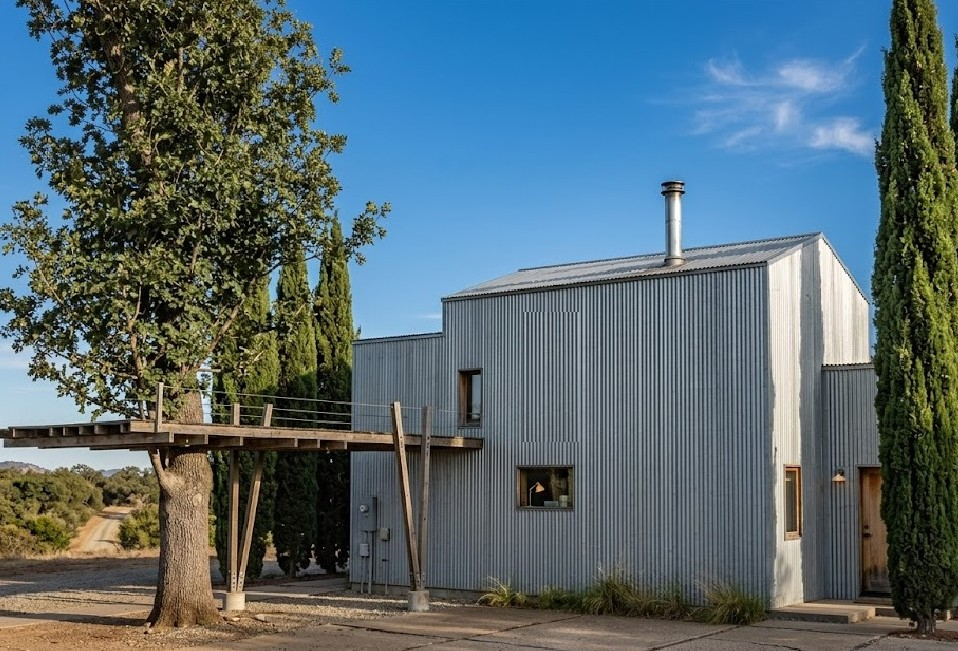
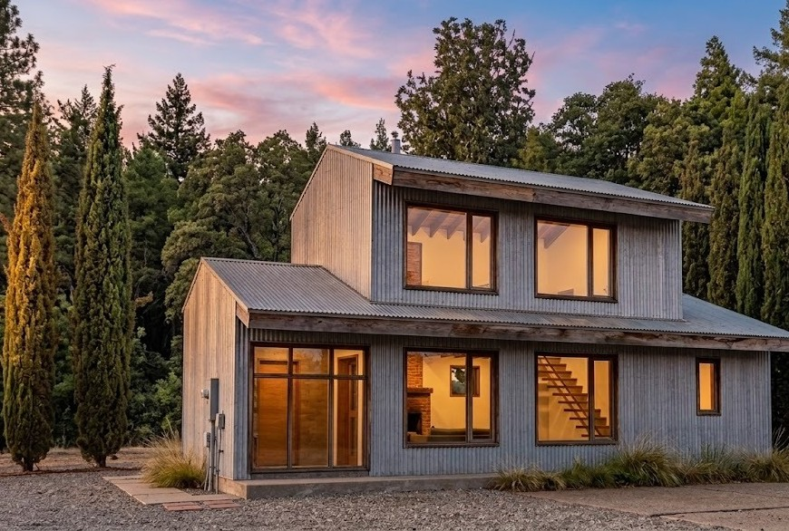
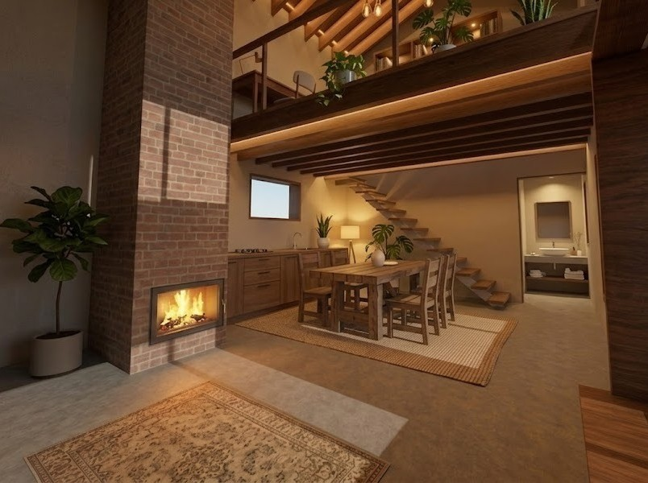

Acompañamiento en cada etapa del proyecto, desde la idea hasta la obra terminada.
Proyectos
Obras y propuestas donde el diseño nace del clima, el paisaje y la forma de habitar.



Proyecto · Trevelin, Chubut
Cabaña bioambiental
Una propuesta de arquitectura pensada para el clima cordillerano y el reparo del paisaje. El proyecto integra estrategias pasivas desde la orientación y la envolvente.
Inercia térmicaGanancia solarControl solarAislación térmicaAnte-cámara de accesoOrientación y reparo de vientos
Basado en relaciones simplificadas de física de edificios y en la carta bioclimática de Givoni — pensado para entender cómo actúa cada estrategia, no como cálculo de proyecto. Trelew, Comodoro Rivadavia, Esquel, Buenos Aires, Oberá, San Juan y Bariloche usan datos y zona IRAM 11603 de la base de estaciones provista. Rawson, Puerto Madryn, Gaiman y San Martín de los Andes no figuraban en esa base: sus valores son una estimación por proximidad climática y quedan sujetos a verificación.
Contacto
Consultas de proyecto, obra o asesoramiento — también a distancia.
AW
Agustín Weinberg
Arquitecto (UBA) · Maestría en Sustentabilidad, Arquitectura y Urbanismo (UBA)
Director de Volumen sur, estudio de arquitectura con base en Trelew, Chubut. Trabaja el diseño arquitectónico desde el territorio y el clima patagónico, integrando proyecto, dirección de obra y análisis de eficiencia energética en cada encargo.
Formación
GradoArquitecto — Universidad de Buenos Aires (UBA)
PosgradoMaestría en Sustentabilidad, Arquitectura y Urbanismo — Universidad de Buenos Aires (UBA)